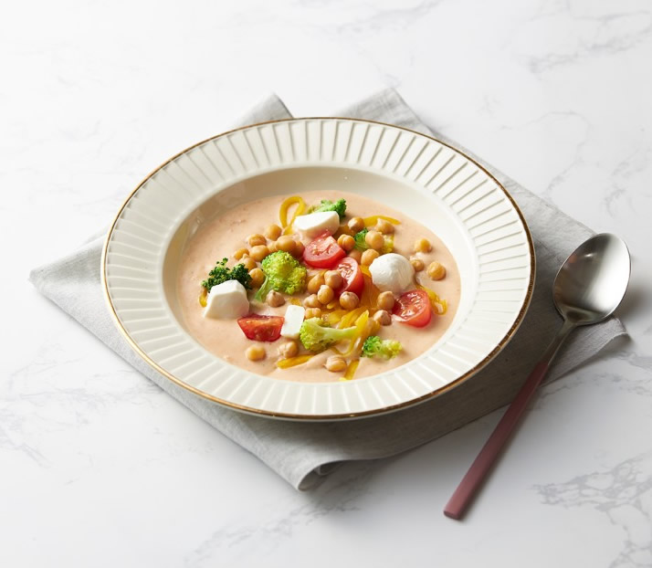
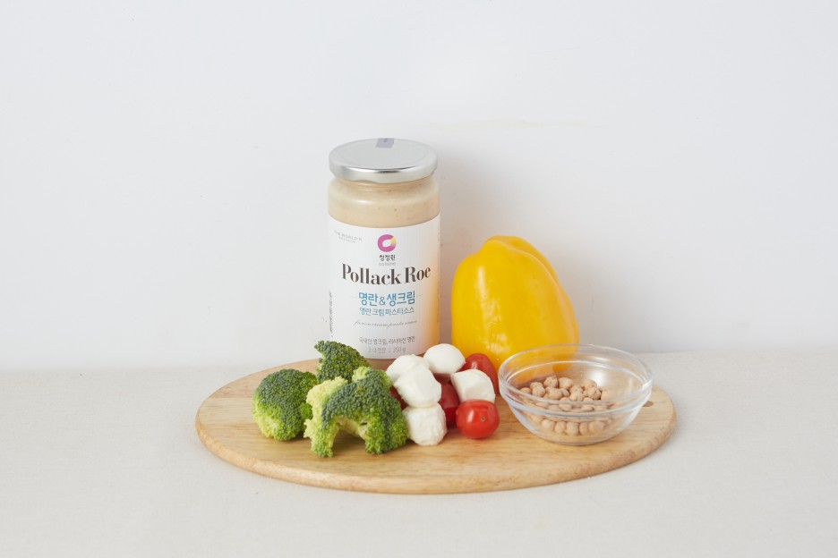
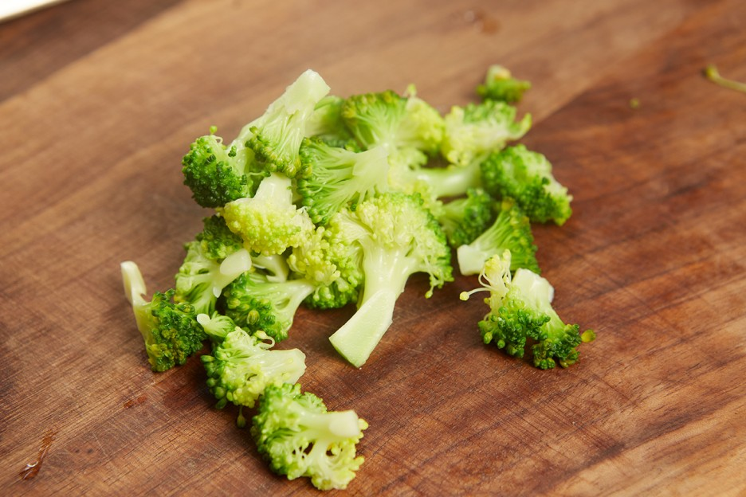
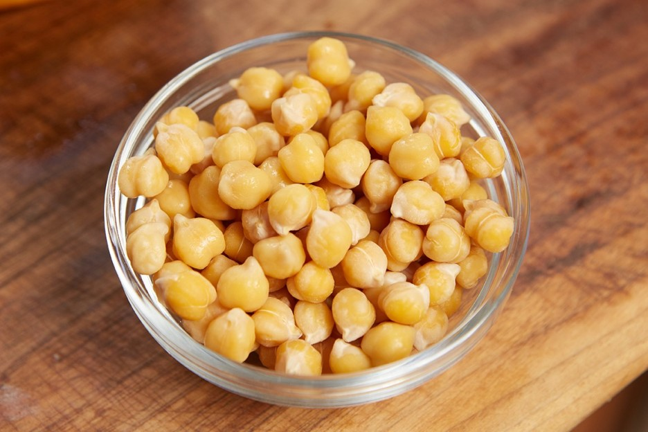
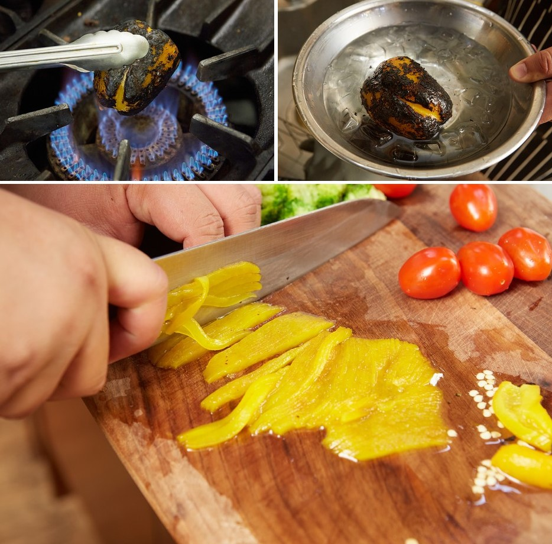
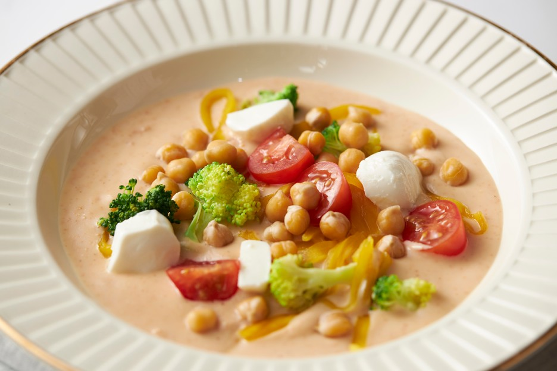
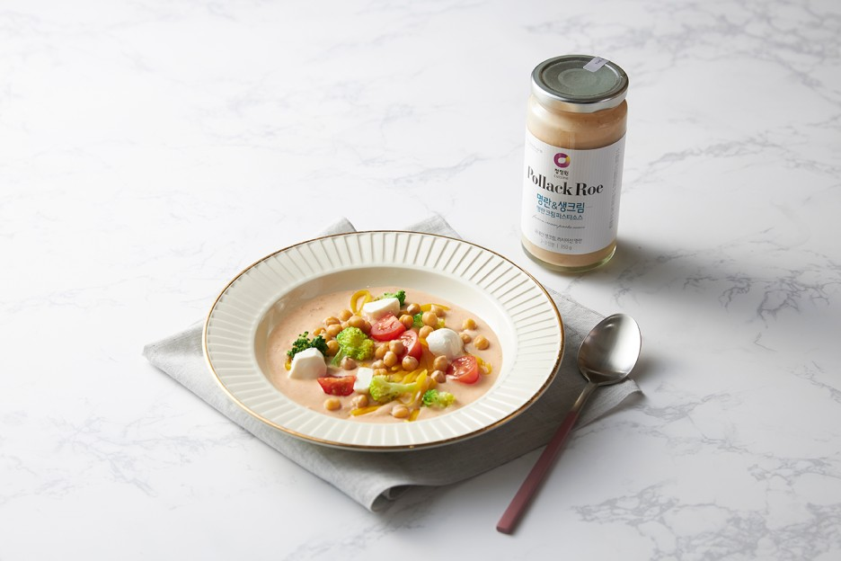

날씨가 추워지면, 몸을 뜨끈하게 해줄 수 있는 요리가 생각나는데요. 국물류가 다소 부담스럽다면 건강까지 생각한 떠먹는 야채 파스타는 어떠신가요? 떠먹는 파스타라니~ 약간 생소할 수 있는데요! 정원이표 떠먹는 병아리콩 파스타는 크림파스타 소스에 몸에 좋은 병아리콩과 야채를 넣어 간단하게 만들 수 있답니다. 특히. 병아리콩은 단백질과 칼슘을 비롯해 비타민C와 철분이 풍부해 겨울철 면역력 증진에 좋은 식재료인데요. 식이섬유가 풍부해 변비 해소에도 좋고 칼로리가 낮아 다이어트 분들도 부담 없이 드실 수 있답니다! 몸에 좋고~ 맛도 좋은 병아리콩 파스타 레시피를 지금부터 함께 만나볼까요?

[재료]
병아리콩 80g, 브로콜리 1/2송이, 방울토마토 5개, 어린야채 1/2컵, 모짜렐라볼치즈 4개, 파프리카 노랑 1개, 청정원 3년묵은 천일염 약간


2. 병아리콩은 물에 약 4시간정도 불린 후 20분 정도 삶는다.

3. 파프리카를 직화로 구워 껍질을 태운 후, 얼음물에 식혀 껍질을 벗겨 모양대로 채 썰어준다.

4. 팬에 명란크림소스를 살짝 데운 후, 접시에 모든 야채를 담은 뒤 모짜렐라치즈로 장식한다.

아침에도 부담 없이 먹을 수 있는 근사한 떠먹는 병아리콩 파스타가 완성되었습니다! 야채 손질만 미리 해두면, 간편하게 크림소스만 데우면 되니 요린이 분들도 쉽게 만들 수 있답니다! 떠먹는 야채 파스타는 부드럽고 짭조롬한 크림 소스에 상큼한 야채와 병아리콩이 씹는 맛을 더해 속은 편하고~ 영양은 듬뿍!! 충전할 수 있는데요. 여기에 빵까지 곁들여 찍어 먹어보세요. 든든한 한 끼로 제격이랍니다! 오늘 레시피에 사용한 청정원 명란&생크림 파스타 소스는 국내산 생크림에 고소한 맛의 명란이 더해진 퓨전 크림소스인데요. 병아리콩만 있다면, 오늘 사용된 재료 외에도 집에 있는 야채들을 탈탈 털어 이번 주말 브런치 메뉴로 병아리콩 파스타를 파스타를 즐겨보세요!
list | top